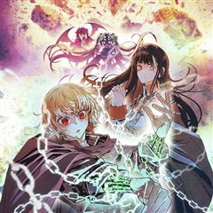
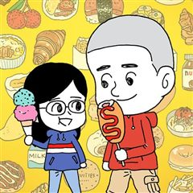
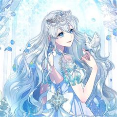
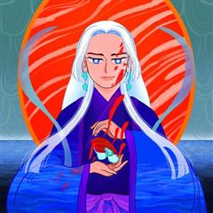
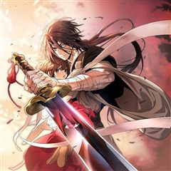

카카오웹툰 추천 인기 순위 TOP 30
카카오웹툰에서 지금 연재 중인 작품을 카카오웹툰 공식 인기 순위 순서로 모았어요. 네이버웹툰·카카오웹툰·레진코믹스에서 조건에 맞는 작품 944개 중 인기 순으로 30개를 골랐어요. 인기 TOP 3: SSS급 죽어야 사는 헌터, 템빨, 이번 생은 가주가 되겠습니다
2026-10-27 기준 · 성인 작품 제외
내 취향으로 더 좁혀서 추천받기 →-
1
 카카오웹툰
카카오웹툰SSS급 죽어야 사는 헌터
F급 말단 헌터 ‘김공자‘. 랭킹 1위 ‘염제‘를 부러워하던 어느 날, 무려 S+급 스킬을 얻는다. 하지만 기쁨도 잠시, 어째 스킬 내용이 이상하다?! 상대의 스킬 중 1개를 복사한다,까지는 좋은데… "뭐? 내가 죽어야만 발동된다고?!" 죽어야 사는 헌터의 인간찬가 <SSS급 죽어야…
눈물샘자극학원물회귀카카오웹툰에서 보기 → -
2
 카카오웹툰
카카오웹툰템빨
[신영우 (유저 네임: 그리드)] 세계 최고의 가상 현실 게임 <SATISFY>. 현실에서나, 게임 속에서나, 불운은 항상 그의 곁을 맴도는데.... 퀘스트 수행 중 우연히 발견한 게임 속 로또, '파그마의 기서'. 20억 명이 넘는 유저 중 유일한 최강의 레전드리 직업으로 전직. "…
사이다학원물게임판타지카카오웹툰에서 보기 → -
3
 카카오웹툰
카카오웹툰이번 생은 가주가 되겠습니다
“…한번 해 보자. 내가 가주가 되는 거야.” 제국에서 제일가는 가문, 롬바르디의 사생아로 환생한 피렌티아. 게다가 이 가문은 막대한 부는 물론 외교와 문화까지 통달한 말그대로 제국의 역사 자체! 금수저 오브 금수저 인생 당첨! 앞으로는 탄탄대로일 거라 생각했는데…. 아버지는 돌아가시…
사이다로판회귀카카오웹툰에서 보기 → -
4
 카카오웹툰
카카오웹툰군림천하
"너만은 꼭 군림천하 해야 한다!” 그 한마디로 진산월의 운명이 결정됐다. 스물세 살, 그는 종남파의 장문인이 되었다. 남은 이들은 단 8명의 제자뿐. 한때 천하제일을 꿈꿨지만, 지금은 명맥만을 잇는 문파. 사부의 유지를 위해, 살아남기 위해— 진산월은 비정한 강호로 나아간다.
자극적인성장물액션카카오웹툰에서 보기 → -
5
 카카오웹툰
카카오웹툰픽 미 업!
그 누구도 던전의 끝까지 오르지 못한 극악의 난이도를 자랑하는 모바일 가챠 게임 <픽 미 업!(Pick me up!)> 마스터 오브 마스터라 불리는 세계 랭킹 5위의 마스터 '로키'는 던전을 깨던 중 정신을 잃게 된다. 깨어나 보니 레벨도 1, 등급도 1성인 <픽 미 업!> 속 영웅…
사이다액션게임판타지카카오웹툰에서 보기 → -
6
 카카오웹툰
카카오웹툰철혈검가 사냥개의 회귀
바스커빌 가문의 사냥개 '비키르'. 사냥개로서 가문에 충성한 보답은 모함과 누명으로 얼룩진 단두대의 칼날이었다. "다시는 토끼를 잡고 나면 삶아지는 사냥개처럼 살지 않겠노라." 그런 그에게 죽음 대신 찾아온 뜻밖의 기회. 어둠 속에서 송곳니를 갈고닦는 비키르의 눈이 붉게 빛났다. "기…
학원물복수극카카오웹툰에서 보기 → -
7
 카카오웹툰
카카오웹툰너에게 빼앗을 왕관
내 평생을 바쳐 사랑한 사람. 그러나 사랑이라 믿었던 것은 배신이었고, 왕이었던 오라비는 나의 무지로 인해 죽었으며, 조국은 소리 없이 처참히 무너졌다. “다시… 돌아왔어.” 하지만 이번 생은 다를 것이다. 숙부에게 주어졌던 영광은 전부 빛을 잃을 것이며, 남편이 바랐던 찬란한 왕관은…
로판복수극카카오웹툰에서 보기 → -
8
 카카오웹툰
카카오웹툰권왕전생
인간들이 이종족을 노예로 부리는 세상. 대마도사 '레펜하르트'는 이종족들을 돕는다는 이유로 인간들에게 마왕 취급을 받는다. 마왕을 토벌하기 위해 온 용사 일행! '레펜하르트'는 그에 맞서 용사 일행에게 큰 피해를 주는 것에 성공하지만, 결국 권왕 '테스론'에게 죽임당할 위기에 처하는데…
학원물성장물카카오웹툰에서 보기 → -
9

-
10
 카카오웹툰
카카오웹툰검술명가 막내아들
진 룬칸델 대륙 최고의 검술명가, 룬칸델의 막내아들 룬칸델 역사상 최악의 둔재 비참하게 쫓겨나 허무한 최후를 맞이한 그에게 다시 한 번 기회가 주어졌다. “너는 이 힘을 어떻게 사용하고 싶더냐?” “저를 위해 사용하고 싶습니다.” 전생의 기억과 압도적인 재능, 그리고 신과의 계약 최강…
액션회귀카카오웹툰에서 보기 → -
11
 카카오웹툰
카카오웹툰샤크
학원폭력의 피해자 차우솔은 자신을 3년 간 괴롭혀온 가해자의 눈을 찌른다. 그 사건을 계기로 우솔의 인생은 180도 달라지는데…… 왕따에서 범죄자로, 범죄자에서 챔피언이 된 남자, 차우솔의 이야기!
서스펜스액션성장물카카오웹툰에서 보기 → -
12
 카카오웹툰
카카오웹툰결혼도 안 했는데 무슨 이혼인가요, 폐하
대륙의 절반이 들끓었던 영토 전쟁이 끝난 후로 십 년. 종전의 영웅, 아이작 메저린의 영지에 순금을 녹인 인장이 박힌 문서가 날아들었다. 아직 결혼도 안 한 외동딸 클리샤 메저린에게 보내온, 황제의 <이혼서>. 느닷없는 이혼으로도 미치고 팔짝 뛸 노릇인데, 황실 규범에 따라 10년간…
개그로판로맨틱코미디카카오웹툰에서 보기 → -
13
 카카오웹툰
카카오웹툰대사형 선유
삼류 낭인 곽노의 손에 거둬진 아이들. 사제관계를 맺고 아이들은 어설프게나마 무공과 보법 수련을 하며 각자의 꿈을 꾼다. 먹고살기 위해 곽노는 늘 자리를 비워야 했고, 아이들 중 맏이인 선유는 사제들을 돌봐야 한다. 그는 대사형大師兄이다.
눈물샘자극액션가족카카오웹툰에서 보기 → -
14
 카카오웹툰
카카오웹툰화타가 된 외과의사
정의로운 성격 때문에 전문의는커녕 목숨까지 잃은 일반외과 전공 3년차 한진수. 천사인가, 악마인가, 아님 알 수 없는 시스템인가. 평소 쌓은 선행 덕분에 부활의 기회를 얻게 된다. 산적 떼에게 죽은 몸으로 부활하게 된 한진수. 그런데 이 몸이 전설의 명의名醫 화타?! 전란이 끊임없는…
눈물샘자극액션환생카카오웹툰에서 보기 → -
15
 카카오웹툰
카카오웹툰가드패스
평소 먹는 것을 좋아해 뚱뚱하고 큰 체격을 가진 '임세준'. 그는 뚱보라는 놀림에도 신경 쓰지 않는 자존감이 높고 확고한 성격을 가졌다. 그에게 단 한 명의 친구 '서하진'. 그녀는 어릴 적부터 세준을 지켜주기 위해 늘 운동을 배워왔다. 어느 날 세준은 같은 반 일진과 트러블이 생기고…
사이다학원물배틀카카오웹툰에서 보기 → -
16

카카오웹툰묵향 다크레이디
마교의 교주로서 극강의 무공을 자랑하던 묵향은 적들(혈교)에 의해 생전 처음 보는 생소한 이세계(판타지 세계)로 떨어지게 된다. 그곳에서 엘프, 마법사, 기사, 드래곤 등 새로운 존재들과 만나며... 무림 최고수 묵향이 원래 자신의 세상(무림)으로 돌아가기 위해 긴 모험을 떠나게 된다…
사이다학원물카카오웹툰에서 보기 → -
17
 카카오웹툰
카카오웹툰남편이 최애인데 이혼당할 것 같다
역하렘 로맨스 판타지 소설에 빙의했다. 여자 주인공인 사촌 여동생을 지독하게 괴롭히고, 유부녀인 주제에 남자 주인공 중 한 명인 황태자를 스토킹하는 작중 최악의 막장 악녀, 이브게니아에게! 그.러.나! 악녀의 남편이 바로 내 최애였다. 여자 주인공이니, 남자 주인공이니 알아서들 살라…
설렘폭발로판카카오웹툰에서 보기 → -
18
 카카오웹툰
카카오웹툰괴담에 떨어져도 출근을 해야 하는구나
[ ⚠️ 해당 작품에는 공포 연출 및 폭력적·잔혹한 장면이 포함되어 있습니다. 이용에 참고 부탁드립니다. ] 소중한 연차까지 내고 갈 정도로 좋아하던 '어떤 현대판타지' 팝업 이벤트. 그리고 그날, 그 현판 속으로 빙의당했다. 무려 유명 대기업에 막 취직한 신입사원으로! 복지 좋고 연…
미스터리카카오웹툰에서 보기 → -
19

카카오웹툰오무라이스 잼잼
'음식'과 '가족'의 이야기를 담은 에세이 만화. 몇 개라도 먹을 수 있을 것 같은 '메추리알 조림', 빙글빙글 돌아가는 '회전초밥', 지구 반 바퀴 돌아 포르투갈에서 맛본 '에그타르트', 매콤상콤하게 볶아 입맛 도는 '마라샹궈', 짭짤한 밥도둑 '간장게장' 등 우리가 사랑하는 모든…
공감음식&요리카카오웹툰에서 보기 → -
20
 카카오웹툰
카카오웹툰무한의 마법사
마굿간에 버려져 평민으로 키워진 아이, 시로네. 타고난 통찰력으로 글까지 깨우친 아이는 도시로 나간 어느 날 그토록 궁금해하던 마법을 경험한다. 그 길로 마법사를 꿈꾸게 된 시로네. 하지만 신분의 장벽이 두터운 이 곳은 아이에게 냉혹하고, 그는 채 어른이 되기도 전에 이 세상의 이면을…
미스터리학원물성장물카카오웹툰에서 보기 → -
21
 카카오웹툰
카카오웹툰엄마가 계약결혼 했다
리리카는 술주정뱅이 어머니를 모시고 하루하루 먹고 사는 빈민가의 소녀다. 그러던 어느날...... “꺄악, 뜨거워! 싫어!” 어머니가 비명을 지르며 잠에서 깨어나더니, “리리,살아있구나, 어려졌니?” 엉뚱한 소리를 하시고 “오늘이 며칠이지?” 정신을 못 차리시더니 “이럴수가, 돌아왔어…
힐링로판육아물카카오웹툰에서 보기 → -
22

카카오웹툰성녀는 북부 대공의 딸이 되었습니다
자신의 피로 사람들을 고쳐 줄 수 있는 신성력을 가진 리리에트. 악마 같은 대신관에게 이용만 당하다 죽음을 맞이했다. 그러던 어느 날, 눈을 뜨니 10살로 돌아와 있었다. ‘전생에 있었던 끔찍한 일들을 되풀이하지 않을 거야.’ 리리에트는 대신관에게서 벗어나기 위해 북부의 지배자 윈저아…
힐링성장물로판육아물카카오웹툰에서 보기 → -
23
 카카오웹툰
카카오웹툰황제궁 옆 마로니에 농장
'태양의 손'을 가진 농사 천재, 헤이즐 메이필드. 할아버지가 준 땅문서를 들고 설레는 마음으로 자신의 농장을 찾아가는데… "그 '대단히 높은 신분의 집주인'이… 황제였어?" 위대한 브라타니아 제국의 젊은 황제 이스칸다. 완전무결한 황궁을 꿈꾸던 그에게 닥친 최대 위기. "땅문서에 제…
힐링로판카카오웹툰에서 보기 → -
24

카카오웹툰인어기담
내가 바뀌고 있다. 인어 고기는 불로불사의 영약이 아니었던 걸까? 고려 말, 전쟁을 피해 도망치던 한 귀족 소녀가 살기 위해 인어 고기를 먹는 순간 그 소녀의 쌍둥이 동생, 그녀가 새로이 정착한 마을 사람들, 그녀가 운명의 짝이라 믿게 된 한 남자의 운명이 파란만장의 소용돌이 속으로…
자극적인복수극카카오웹툰에서 보기 → -
25

카카오웹툰무신귀환록
그 누구도 맞설 수 없는 최흉의 인재(人災), 무극신마, 단우현. 악행으로 인해 봉인되고 천 년 후. 천 년이라는 시간은 단우현에게서 살심을 없애기에 충분했다. 변해버린 세상, 아는 사람이라고는 아무도 없는 고독, 남은 것은 허탈함과 공허함 뿐. “바람이 흐르듯 세월도 흐르는구나. 정…
사이다액션정치카카오웹툰에서 보기 → -
26
 카카오웹툰
카카오웹툰지옥사원
인간의 음식에 매료된 악마 쿼터, 사고로 흙수저 인간에게 빙의하다?! 능력을 모두 잃고 인간 <고순무>의 몸에 갇힌 악마는, ‘낮은 등급’ 인간의 삶이 지옥에서의 삶보다 질이 떨어지자 ‘높은 등급’ 인간이 되기로 결심한다. 한 편, 국내 최고의 대기업 <선호 그룹>에선 학력과 경력을…
오피스카카오웹툰에서 보기 → -
27
 카카오웹툰
카카오웹툰야구의 정치
구단에서 쫓겨난 야구 코치 맹정진. 선배의 도움으로 겨우 입단한 선데빌스 팀은 파벌 싸움으로 나락에 떨어진 상황. 이곳에서 버틸 방법은 정치밖에 없다. 실력만으론 부족한 야구판에서 살아남기 위해, 맹정진의 ‘정치’가 시작된다.
성장물액션카카오웹툰에서 보기 → -
28카카오웹툰
2레벨로 회귀한 무신
[무가치한 인류를 삭제합니다] 게임인 줄로만 알았던 '배틀넷'이 인류에게 재앙을 불러왔다. 온 우주의 생물들이 목숨을 걸고 경쟁하는 '스페이스 리그'가 개최 후 지구의 대표 인류는 패배를 반복하면서 결국 인류는 종말을 맞이했다 단 한 사람만 빼곤 '무성' 성지한. 그의 스킬 '무명신공…
사이다게임판타지카카오웹툰에서 보기 → -
29
 카카오웹툰
카카오웹툰로그인 무림
세상의 경계인 게이트에서 몬스터 사냥을 하는 헌터들이 잘 먹고 잘 사는 시대. 주인공 진태경은 최하위 헌터라 벌이가 시원찮다. 어느 날, 낡은 VR 게임기를 줍게 되고 접속하니 무림의 세계가 펼쳐진다. 우여곡절 끝에 현실로 돌아온 태경은 무림에서 얻었던 힘이 현실에서도 그대로 남아있음…
개그서스펜스액션게임판타지카카오웹툰에서 보기 → -
30
 카카오웹툰
카카오웹툰재앙급 영웅님이 귀환하셨다
지상에 최강의 영웅이 있었다. “하지만 죽었잖아. 우리가 죽인 놈이 어떻게 돌아와?” “그러게. 돌아올 수 있으면 한번 돌아와 보라지.” 그런데 20년 만에 진짜 돌아와 버렸다? “뭘 그리 놀래? 왜. 양심에 찔릴 짓이라도 하셨나?” 이 XX들. 가만 안 둔다.
사이다학원물복수극카카오웹툰에서 보기 →